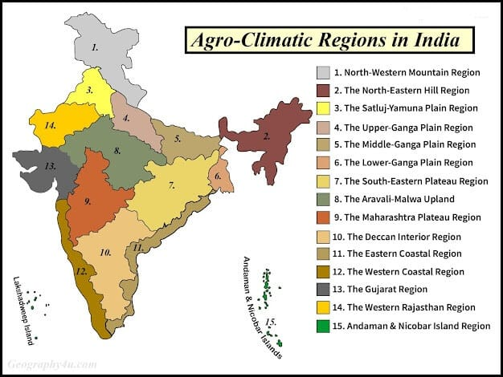

13 Agriculture
Agriculture
Agriculture is defined in the Agriculture Act 1947, as including ‘horticulture, fruit growing, seed growing, dairy farming and livestock breeding and keeping, the use of land as grazing land, meadow land, osier land, market gardens and nursery grounds, and the use of land for woodlands where that use ancillary to the farming of land for Agricultural purposes”.
It is also defined as ‘purposeful work through which elements in nature are harnessed to produce plants and animals to meet human needs. It is a biological production process, which depends on the growth and development of selected plants and animals within the local environment.
Scope of Agriculture in India:
In India, population pressure is increasing while the area under cultivation is static or even shrinking, which demands the intensification of cropping and allied activities in two dimensions i.e., time and space dimension.
India is endowed with a tropical climate with abundant solar energy throughout the year, which favors growing crops around the year. There is a vast scope to increase irrigation potential through river projects and minor irrigation projects. In addition to the above, India is blessed with more laborer availability. Since agriculture is the primary sector, other sectors are dependent on agriculture. Total geographical area: 328.848 million ha. Total reporting area: 304.300 million ha. The area under cultivation: 143.000 million ha. Total cropped area: 179.750 million ha. Area sown more than once: 36.750 million ha. Area not available for cultivation: 161.300 million ha. Area under forest: 66.400 million ha.
History of Agriculture in India
Indian agriculture began by 9000 BCE as a result of early cultivation of plants, and domestication of crops and animals. Wheat, barley, and jujube were domesticated in the Indian subcontinent by 9000 BCE. Domestication of sheep and goats soon followed.
This period also saw the first domestication of the elephant. Barley and wheat cultivation—along with the domestication of cattle, primarily sheep and goats—was visible in Mehrgarh by 8000-6000 BCE. Agro pastoralism in India included threshing, planting crops in rows—either of two or of six— and storing grain in granaries. By the 5th millennium BCE agricultural communities became widespread in Kashmir. The first evidence of the cultivation of cotton had already developed. Cotton was cultivated by the 5 th millennium BCE- 4 th millennium BCE. The Indus cotton industry was well developed and some methods used in cotton spinning and fabrication continued to be practiced till the modern Industrialization of India. A variety of tropical fruits such as mango, and muskmelons are native to the Indian subcontinent. The Indians also domesticated hemp, which they used for a number of applications including making narcotics, fiber, and oil. The farmers of the Indus Valley grew peas, sesame, and dates. Sugarcane was originally from tropical South Asia and Southeast Asia. Wild Oryza rice appeared in the Belan and Ganges valley regions of northern India as early as 4530 BCE and 5440 BCE respectively. Rice was cultivated in the Indus Valley Civilization. Agricultural activity during the 2nd millennium BC included rice cultivation in the Kashmir and Harappan regions. Mixed farming was the basis of the Indus Valley economy. Irrigation was developed in the Indus Valley Civilization by around 4500 BCE. The size and prosperity of the Indus civilization grew as a result of this innovation, which eventually led to more planned settlements making use of drainage and sewers. Sophisticated irrigation and water storage systems were developed by the Indus Valley Civilization, dated to 3000 BCE, and An early canal irrigation system was developed in 2600 BCE in India. Archeological evidence of an animal-drawn plow dates back to 2500 BC in the Indus Valley Civilization.
Agricultural Land Use in India
Agriculture depends heavily on land as a resource in India, as it remains a labor-intensive, land-based activity. Land’s significance in agriculture can be seen in:
Economic Impact: Land’s direct contribution to productivity in agriculture is far greater than in other sectors. Social Value: Land ownership boosts social status and security for farmers in rural areas. Agricultural Land Stock: The stock of agricultural land is limited, with a slight decline over the years due to pressures from other sectors.
The limited availability of land underlines the need for land-saving technologies, which focus on increasing yield per unit of land or overall production by enhancing land-use intensity.
Types of Farming
Farming in India is classified by the source of moisture:
1. Irrigated Farming: Divided into protective (for supplementing rain) and productive irrigation (for maximizing yield). Productive irrigation provides high soil moisture throughout the growing season, whereas protective irrigation compensates for seasonal shortages. 2. Rainfed Farming: Divided into dryland and wetland farming. Dryland farming is practiced in areas with less than 75 cm annual rainfall and grows drought-resistant crops, while wetland farming occurs in regions with excess rain, often resulting in flood risks.
Agriculture is a long-standing economic activity in India, and over time, cultivation methods have evolved significantly due to changes in the physical environment, technological advancements, and socio-cultural practices. Farming systems in India range from subsistence to commercial types, and various methods are followed depending on regional factors.
- 1. Primitive Subsistence Farming This form of farming is still practiced in a few areas of India. It involves small-scale cultivation using basic tools like hoes, digs sticks, and family/community labor. It is highly dependent on the monsoon and the natural fertility of the soil. This type of farming is often referred to as slash-and-burn agriculture, where farmers clear a patch of land, grow food crops, and move to a new area once the soil fertility declines. The cycle allows nature to naturally restore soil fertility, but productivity remains low due to the lack of modern inputs like fertilizers. Names of Primitive Subsistence Farming across India: Jhumming in the North-eastern states (Assam, Meghalaya, Mizoram, Nagaland) Pamlou in Manipur Dipa in Bastar district, Chhattisgarh Beware/Dahiya in Madhya Pradesh Podu/Penda in Andhra Pradesh Pama Dabi/Koman/Bringa in Odisha Khil in the Himalayan belt Kuruwa in Jharkhand This method is also known by various names internationally, such as Milpa (Mexico, Central America), Conuco (Venezuela), Ladang (Indonesia), and Ray (Vietnam). Example of Crops Grown: Mostly food crops like cereals (rice, maize), millet, and vegetables.
- 2. Intensive Subsistence Farming This farming system is practiced in regions with high population pressure on land. It is a labor-intensive type of farming where farmers apply biochemical inputs such as fertilizers and pesticides and use irrigation to achieve higher yields on small plots of land. Despite small landholdings due to inheritance patterns, farmers work intensively to maximize output, often due to the lack of alternative livelihood sources. States where this is practiced: West Bengal, Uttar Pradesh, Bihar, Punjab, Tamil Nadu, and parts of Maharashtra.
- 3. Commercial Farming In commercial farming, the focus is on higher productivity with the use of modern agricultural inputs like high-yielding variety (HYV) seeds, chemical fertilizers, insecticides, and pesticides. The level of commercialization varies by region. For instance, rice is a commercial crop in states like Haryana and Punjab, while in Odisha, it is mainly a subsistence crop. Examples of crops that are commercial in some regions and subsistence in others: Rice in Punjab (commercial) vs. Odisha (subsistence) Sugarcane in Uttar Pradesh (commercial) vs. parts of Bihar (subsistence)
- 4. Plantation Farming A specialized form of commercial farming, plantation farming involves growing a single crop over a large area using capital-intensive methods. The produce is largely for industrial use, such as raw materials for processing industries. Large tracts of land are cultivated, often using migrant labor. Important plantation crops in India include: Tea in Assam and North Bengal Coffee in Karnataka Rubber in Kerala Sugarcane, bananas across various states. Plantations are integrated with industries, forming a significant connection between agriculture and industry. Efficient transportation networks are crucial for linking plantation areas with processing units and markets.
Cropping Pattern
Cropping pattern refers to the arrangement, sequence, and distribution of crops grown on a piece of land over a year. Influenced by factors like climate, soil fertility, water availability, and market demand, cropping patterns vary across regions to maximize productivity and profitability.
Cropping Pattern in India
India's cropping patterns are undergoing a transformation, driven by data and economic forces. The area under fruits and vegetables has expanded, especially in states like Himachal Pradesh with a rise in apple and cherry cultivation. Data also suggests a growing focus on oilseeds, reflecting government initiatives and market opportunities. This shift towards diversification promises improvements in dietary intake, soil health, and farmer incomes, though challenges like water scarcity and equitable benefits must be addressed for a sustainable future.
Types of Cropping Patterns in India
India's vast landscape and diverse climate necessitate varied cropping patterns:
Based on Season
Kharif Season (June-September): Monsoon season, ideal for rice, maize, cotton, pulses (lentils, black gram, chickpeas, pigeon peas), groundnut, and jute. Rabi Season (October-March): Winter season, with crops like wheat, barley, pulses (gram, black gram), mustard, and potato. Zaid Season (March-April to June-July): Short season with crops like watermelon, muskmelon, cucumber, and other vegetables like tomatoes and okra.
Based on Cropping Intensity
Mono-cropping: Single crop during a specific season, e.g., rice in Kharif or wheat in Rabi. Intercropping: Two or more crops on the same field, enhancing land use and natural pest control, e.g., pulses with wheat or maize. Mixed Cropping: Sowing different crops in a close, irregular pattern, improving biodiversity, e.g., onions with tomatoes and peppers. Sequential Cropping: Multiple crops on the same land sequentially, allowing for multiple harvests, e.g., vegetables followed by rice.
Other Cropping Systems
Relay Cropping: Planting a second crop before the first is harvested, e.g., moong dal before sugarcane. Multi-cropping: Intensive practice of growing multiple crops in a year to maximize production potential.
Factors Affecting Cropping Pattern
Climate and Rainfall: Varied climate influences crop suitability; e.g., wheat in cooler regions, and rice in wet areas. Soil Type: Soil fertility and water retention affect crop choice, e.g., black soils for cotton and pulses. Subsistence vs. Commercial Farming: Shift from subsistence to commercial farming with a focus on cash crops. Land Ownership and Farm Size: Small farmers often have fewer options for diversified cropping. Government Policies: Support for food security through MSPs for staples; diversification initiatives promote alternative crops. Technological Advancements: Irrigation, high-yielding varieties (HYVs), and Green Revolution practices improve productivity. Market Fluctuations, Climate Change, and Soil Degradation: Farmers face risks like price volatility and soil degradation due to monoculture and chemical fertilizers.
Agricultural Development Post-Independence
After Independence, the government focused on increasing food production. Key strategies included switching from cash to food crops, intensifying land use, and expanding cultivated areas. This focus shifted in the 1960s with the Green Revolution, introducing high-yield varieties (HYVs) and modern farming methods, leading to a surge in crop output. However, the revolution was limited to irrigated regions, creating regional disparities.
Recent initiatives target balanced growth by focusing on rainfed regions, promoting diversified farming (dairy, poultry, horticulture), and emphasizing sustainable practices.
Challenges in Indian Agriculture
Agriculture in India faces several challenges:
1. Dependence on Monsoon: Only a third of the land is irrigated, making most agriculture rain-dependent and prone to drought and flood. 2. Low Productivity: Compared to global standards, productivity is lower in India, particularly in rainfed areas. 3. Financial Constraints: Modern inputs are costly, leaving small farmers reliant on credit and vulnerable to debt. 4. Land Fragmentation: Small, scattered landholdings limit economic efficiency. 5. Environmental Degradation: Soil erosion, salinization, and overuse of chemicals harm the soil’s health, particularly in irrigated areas.
Sustainable Agricultural Practices
Sustainability efforts, like the National Mission for Sustainable Agriculture (NMSA), encourage climate-resilient farming and the promotion of organic farming through initiatives such as Paramparagat Krishi Vikas Yojana (PKVY).
